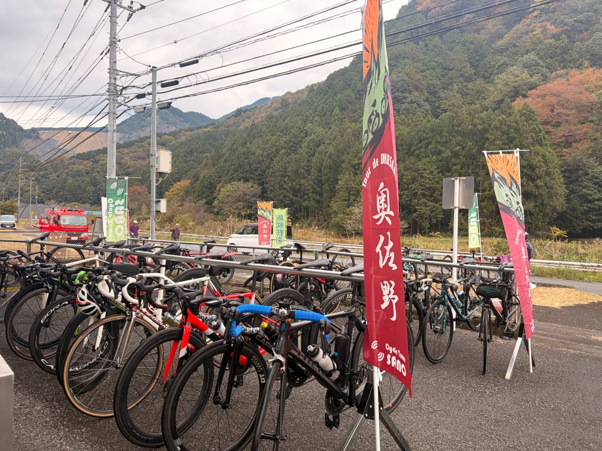
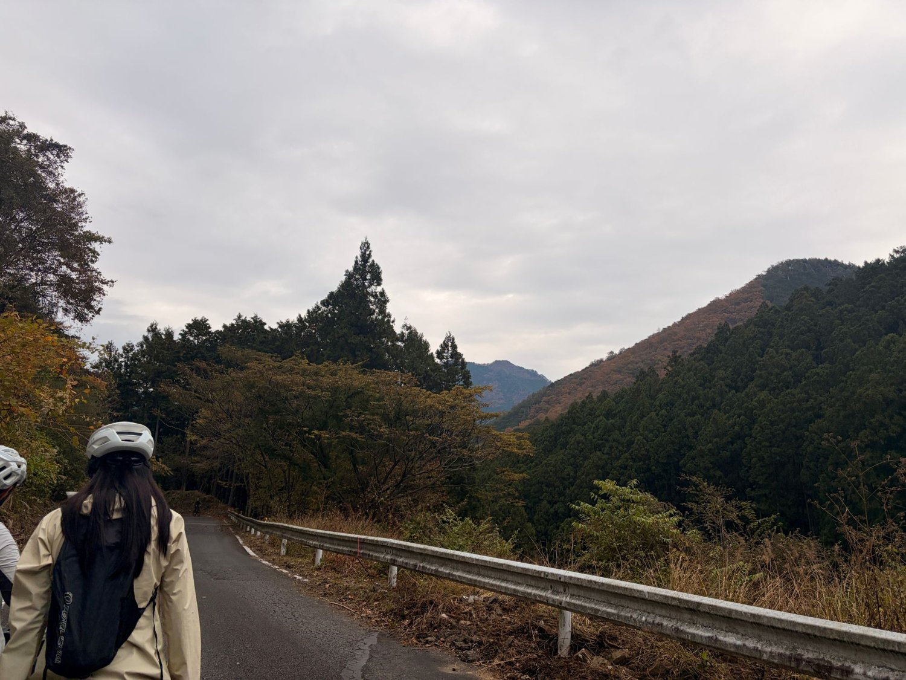
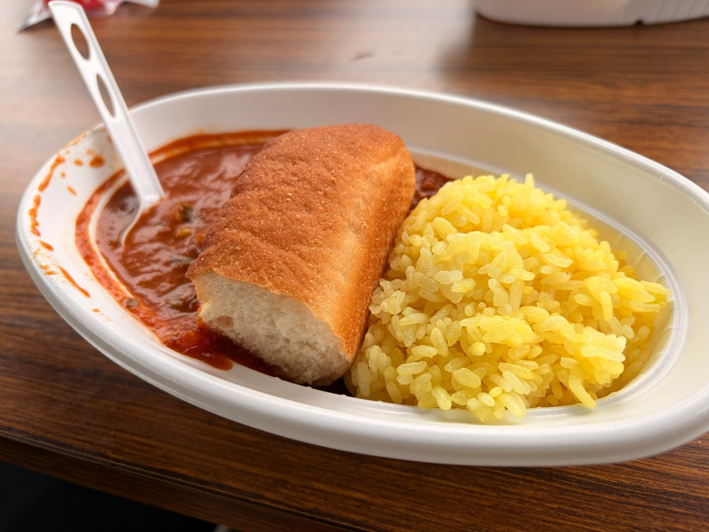
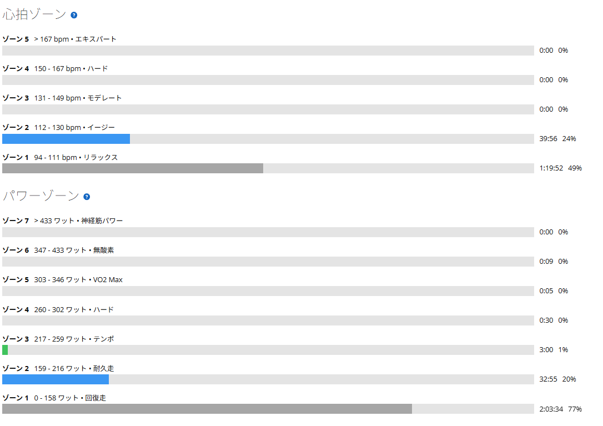
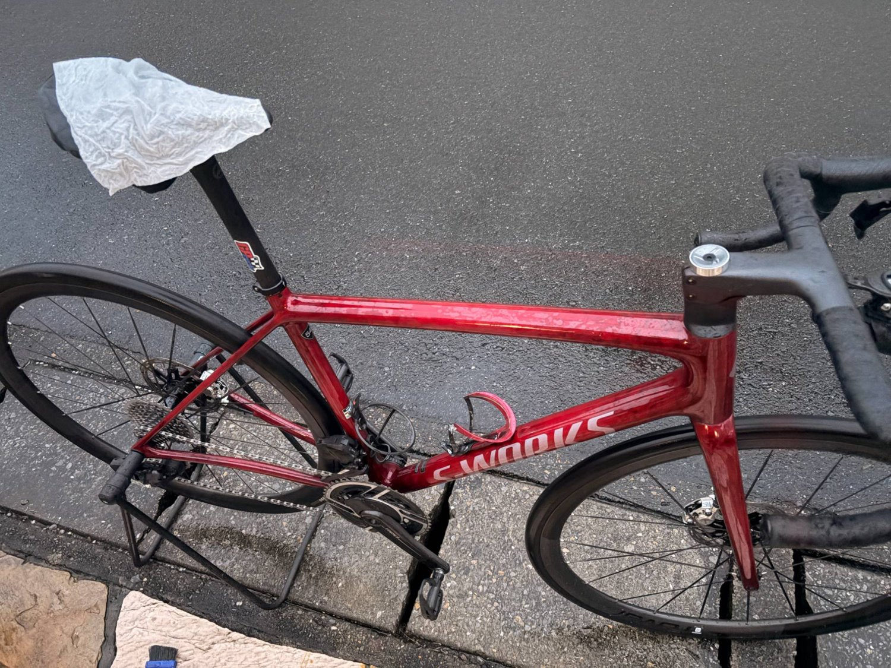

2026年、第4回ツール・ド・奥佐野。パワーばかり見ていた私が、久しぶりに景色を楽しんだ日。
普段の私のサイクリングは、だいたいパワーメーターとのにらめっこだ。何ワット出ているか。あと何分踏めるか。FTPに対して何％か。富士ヒルゴールドを目指している以上、それも大事なことなのだけれど、今回は少し違う一日になった。
11月15日に開催された「第4回ツール・ド・奥佐野」に、ガイドライダー兼運営スタッフとして参加してきた。参加費を払って走る側ではなく、サイクル部会のメンバーとしてイベントを運営する側。第1回から携わっているので、今回で4回目になる。

朝6時半集合。まずは走る前の仕事から
スタッフの集合は朝6時半。道路に順路を示すカラーコーンを置いたり、テントを設営したり。サイクリングイベントは、参加者が走り出す前からすでに始まっている。
そして今回、何より気になっていたのが天気だ。前日から雨の予報で、当日もスタート前には雨が降っていた。正直なところ心配だった。自転車イベントにとって天気は大敵だが、こればかりは気合いでどうにかできるものではない。幸い、スタート後は比較的雨に降られずに済んだ。路面こそ濡れていたものの、結果的には天候にも助けられたと思う。
今回はあむさんと一緒に走る
今回、私が一緒に走ってサポートしたのは、YouTubeなどでも活動されているインフルエンサーのあむさん。
実際にお会いして感じたのは、動画で見るとおり明るく、話しやすい方だということ。そして何より、本当に楽しそうに自転車に乗る方だった。終始笑顔で、参加者の方たちともたくさんおしゃべりされている。その様子がとても素敵だった。
遠方から来てくださった参加者も多く、エイドごとに自然と会話が生まれる。レースのピリッとした空気とは違う、和やかな雰囲気があった。
いつものサイコンばかり見ている私とは違う

今回のコースは佐野市北部を走る約52km。途中には近沢林道のヒルクライムがある。私は前を走るガイド役だったので、参加者のペースに合わせ、スピードが上がりすぎないように気を配った。普段なら登りに入った瞬間、ついパワーの数字を気にしてしまう。でも今回は違う。周りを見ながら走っていると、山の紅葉や沿道の景色がちゃんと目に入る。同じ自転車に乗っていても、何を意識するかで見えるものが変わるのだと改めて感じた。
近沢林道は距離こそ短いものの、勾配は急。参加者の皆さんも大変そうだった。それでも、参加者同士で励まし合いながら登っている姿が印象に残った。速く登ることだけがヒルクライムの楽しみではない。そう思わせてくれる場面だった。
エイドもツール・ド・奥佐野の楽しみ
今回のエイドは3か所。
- 第1エイド佐野市役所野上支所：焼きそば、しんこまんじゅう
- 第2エイド遠藤食品直売所：桜大根、カレー
- 第3エイド出流原弁天池：芋フライ、味噌まんじゅう

こうして並べると、なかなかの充実ぶりだ。普段の高強度練習なら、補給は走るための燃料として考えがち。でもイベントでは、地元の食べ物を楽しみ、参加者と雑談する時間そのものが魅力になる。地元・佐野の景色や食べ物を楽しんでもらえることは、運営側としても嬉しい。
Garminの数字は、いつもとまるで違う
- 全体52.20km / 走行2時間40分28秒（経過4時間11分53秒） / 獲得445m
- 負荷平均103W / NP136W / IF0.471 / TSS59.2
- 心拍平均103bpm / 最大130bpm

普段の練習なら、平均103Wという数字を見て「今日は何をしていたんだ？」となりそうだ。でも今回はこれでいい。そもそも目的が違うのだから。
たまにはAIにも、数字以外の大切さを分かってもらわないと困る。……と思っていたら、最後にTSSには出ない疲れまで心配された。まあ、そうかもしれない。
無事に終わった。それが何より大きい
第1回から運営に携わっている立場として、イベントが終わったときに一番大きかったのは安心感だった。イベントは、事故やトラブルが起きてしまうと次回以降の開催が難しくなることもある。だからこそ、何より大切なのは参加者の皆さんが安全に走り、楽しんで帰ってくれること。大きな問題なく運営を終えられたことが、スタッフとして何より嬉しかった。

イベントは終わったけれど、自分の自転車の後片付けまでは終わっていなかった。
紅葉を見て、話して、笑顔で走る
パワーを追いかける練習も、もちろん好きだ。でも、紅葉を見て、誰かと話して、笑顔で走る。そういうサイクリングの楽しさも忘れたくない。
第4回ツール・ド・奥佐野に参加してくださった皆さん、運営に携わった皆さん、お疲れさまでした。そして、ありがとうございました。